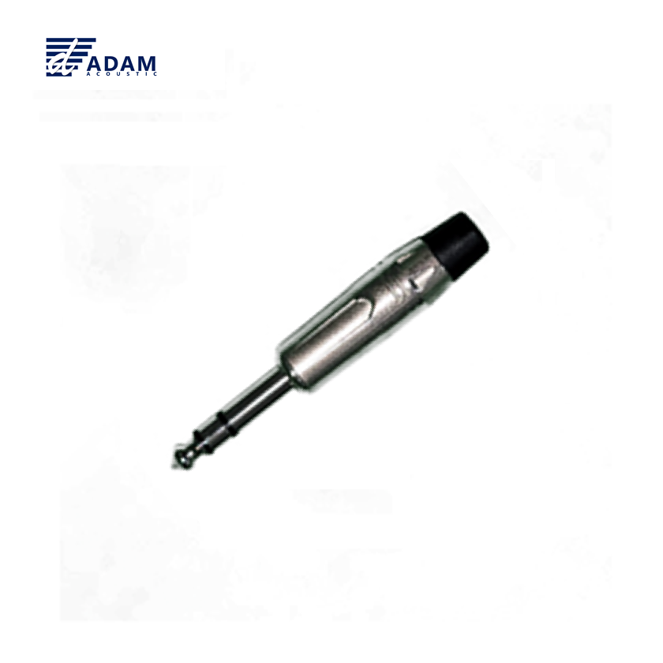

6.35mm TRS(Tip-Ring-Sleeve) 3-컨택 스테레오 플러그. 헤드폰·모니터 믹스·밸런스드 라인 등 스테레오 또는 밸런스드 모노 신호를 전송하는 경로에 사용합니다. CJ2M025(TS)와 동일 규격의 1/4인치 바디 크기를 따르며, 팁·링·슬리브 3개 컨택을 솔더 타입으로 배선합니다.

AD109는 ADAM(현대에이브이씨) 브랜드의 1/4인치 TRS(6.35mm · Tip-Ring-Sleeve) 스트레이트 플러그 커넥터입니다. 팁·링·슬리브 3개 접점 구조를 가져 스테레오 오디오(예: 헤드폰 출력) 또는 밸런스드 모노(예: TRS 라인 입출력) 신호 결선에 모두 사용할 수 있습니다.
AD109 1/4인치 TRS 스테레오 플러그의 주요 특징입니다.
ADAM AD109 공식 사양 기준입니다.
| 모델명 | AD109 |
|---|---|
| 타입 | 1/4" (6.35mm) TRS 플러그 · 스테레오 / 밸런스드 · 스트레이트 |
| 컨택 구성 | 3 컨택 (Tip · Ring · Sleeve) |
| 쉘 재질 | Die-cast Zinc Alloy · Nickel 마감 |
| 컨택 도금 | Nickel Plated |
| 결선 방식 | Soldering (납땜) |
| 용도 | 스테레오 헤드폰 · 밸런스드 라인 · TRS 인서트 케이블 · 악기 라인 |
| 대응 잭 | 6.35mm TRS 소켓 (믹서 · 앰프 · 오디오 인터페이스 등) |
| 짝 제품 | CJ2M025BB(TS) · YS177/YS176(XLR) 등과 같은 케이블 조합 가능 |
| 브랜드 | ADAM · (주)현대에이브이씨 |
| 권장소비자가 | 2,640원 / 개 (VAT 포함) |
※ 본 표는 ADAM 유통 사양서 기재 사항 및 1/4" TRS 업계 표준을 기준으로 작성되었습니다. 치수·절연 내압 등 상세 전기 사양은 별도 문의 바랍니다.
AD109와 함께 사용하기 좋은 커넥터 및 케이블입니다.